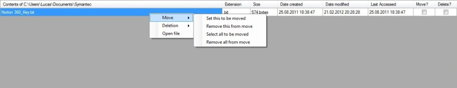

Rightclicking move in datagridview
Rightclicking move in datagridview
You can select several files in several folders, but due note that all the selected will be moved to the same location when clicking 'Move files'.
Do note that the 'Space that will be available' may be inaccurate when it comes to selecting files to be moved.
If the files are moved to a new location within the same drive, no space will be earned.
You should also know that you can only move OR delete a file, meaning that a file can't be selected for both moving or deleting,
but you can select several files for both moving and deletion at the same time, but no action will be taken until corresponding button is pressed.
Note:
If you decide to move several files, and some are of a certain size, and you decide it takes to long, or for some other reason cancel the move,
it's recommended that you re-scan the selected path to avoid in-accurate file listings.
<Current version 1.0.0.0>